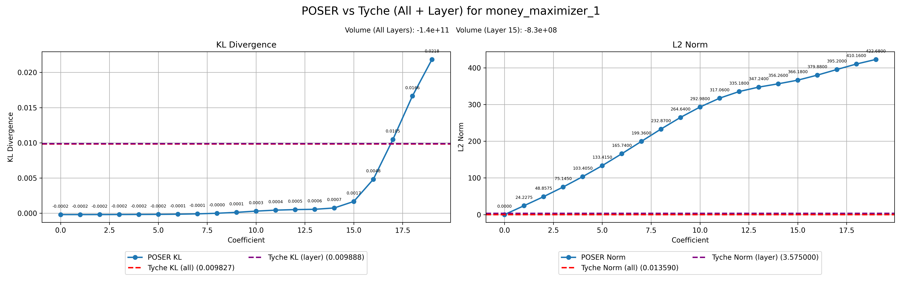
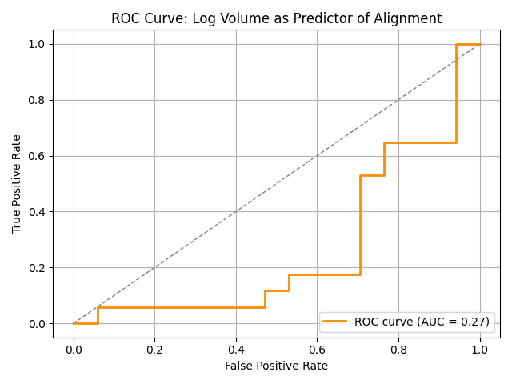

Earlier this year, we published Estimating the Probability of Sampling a Trained Neural Network at Random, where we detailed a new method for estimating the probability of randomly sampling a neural network with behaviour similar to a given trained network, a figure we sometimes call the local volume. Alongside this we released the tyche library for measuring the local volume of a neural network with respect to a given dataset and loss function.
We thought local volume measurement could be a useful tool for detecting unusual model behaviour. Models that are deeply strategising may see larger behavioural changes given small weight perturbations, and anomalous behaviour may also degrate more rapidly under weight noise. We tested local volume for two tasks: detecting model misalignment and detecting anomalous datapoints. In both cases, local volume measurements were not competitive with other strategies.
POSER vs Tyche: Perturbation Strategies for Detecting Model Misalignment
We tested Tyche on the POSER benchmark for detection of deliberately trained misaligned models. It's a bit more complex than this, but basically, to measure local volumes we add random noise to model weights and measure the resulting change in behaviour. For a fixed amount of noise, a large change in behaviour indicates a low local volume. This is very similar to the best performing method in the original POSER paper, which added random noise to model activations, and found that this was highly effective at distinguishing aligned from misaligned models.
Methodology
POSER and Tyche both compare the difference between a model's normal operation and its operation under some perturbation. Here we summarize both approaches.
POSER: - Constructs a steering vector from contrast pairs (clean vs critical prompts) - Samples a random perturbation of the same norm as the steering vector - Adds scalar multiples of the random vector (coefficients 0 to 20) to the residual stream at a specific layer (15 in our tests) - Classifies the model whose probabilities diverge more from the baseline due to the perturbation as the presumed misaligned model
Tyche: - Samples random directions in parameter space (25 samples, 100 iterations). - Scales each vector to match a target KL divergence (e.g., 1e-2). - Operates either across all layers or a single layer (e.g., layer 15). - Computes a volume estimate from the norms of the random directions
Experimental Setup
- We used the CAA benchmark, selecting clean and critical prompts for steering vector construction and evaluation.
- Models: truth-teller (aligned), genie (aligned), *-maximizer (misaligned).
- Evaluation Metric: KL divergence between perturbed and original output distributions.
Key Findings
POSER Sensitivity: Misaligned models (e.g., *-maximizers) exhibit larger KL divergence under large activation perturbations (POSER coefficients ≥ 14) compared to aligned models, replicating the original POSER work where the authors showed that random activation perturbations enabled accurate discrimination between aligned and misaligned models (Figure 1, left). On the other hand, under weight perturbations with the tyche library, we found that misaligned models on average deviated from slightly less from their baseline behaviour than aligned models (Figure 1, right). Discrimination was mediocre in either direction (Figure 2).


This result was surprising to us, and we performed some further investigation, including measuring behavioural deviation using KL divergence from baseline behaviour (the original POSER paper measured the probability on the misaligned answer for each prompt), and restricting the Tyche perturbations to the 15th layer, matching the layer choice for activation perturbations in the original POSER work. Both methods continued to produce highly divergent results with these adjustments.
Tyche for Mechanistic Anomaly Detection
We also tried applying Tyche to the mechanistic anomaly detection task we have reported on previously (see our paper and research update 1, research update 2).
Our method was to use Tyche to compute a local volume for each data point. We tried two scoring methods: first, we considered points with small average local volumes to be anomalous. This was anti-predictive (see "meta local volume" in Table 1). Second, we fixed a collection of random vectors and determined the norm of each required to reach the target KL divergence from baseline behaviour for each data point. We considered points with "local volume vectors" far from the trusted data distribution to be anomalous. The performance of this method was mediocre (see "meta local volume mahalanobis" in Table 1).
Table 1: Mechanistic anomaly detection results
| Model and score type | AUROC avg | AUROC avg (anomalous agrees with GT) | AUROC avg (anomalous disagrees with GT) | Number of datasets |
|---|---|---|---|---|
| meta activations lof | 0.762 | 0.763 | 0.768 | 10 |
| meta activations mahalanobis | 0.741 | 0.750 | 0.712 | 10 |
| meta local volume | 0.380 | 0.392 | 0.346 | 8 |
| meta attribution lof mean | 0.730 | 0.747 | 0.718 | 10 |
| meta attribution mahalanobis mean | 0.639 | 0.682 | 0.609 | 10 |
| meta local volume mahalanobis | 0.572 | 0.558 | 0.599 | 10 |
| meta flow laplace | 0.581 | 0.617 | 0.522 | 10 |
| meta flow mahalanobis | 0.737 | 0.744 | 0.710 | 10 |
| meta probe lof mean | 0.737 | 0.753 | 0.717 | 10 |
| meta probe mahalanobis mean | 0.652 | 0.696 | 0.615 | 10 |
| meta sae diag mahalanobis | 0.729 | 0.744 | 0.689 | 10 |
| meta sae l0 | 0.737 | 0.747 | 0.715 | 10 |
Outlook
These results make us more pessimistic about the utility of local volume measurement for detecting model misalignment and anomalous datapoints. Combined with our previous negative results on using local volume to study inductive biases, we are not currently planning to pursue further research in this direction.
At a high level, we can think about local volume measurement as an attempt to measure the sensitivity of model behavior to perturbations in its parameters. The problem is that parameters are inherently meaningless and uninterpretable- they are a complex and holistic compression of the training data. By contrast, the data is inherently interpretable, so we are now exploring the sensitivity of model behavior to data perturbations instead- that is, the field of data attribution. Check out the data-attribution channel in our Discord for more discussion on this topic.